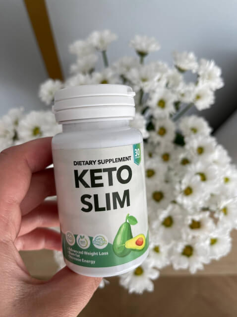
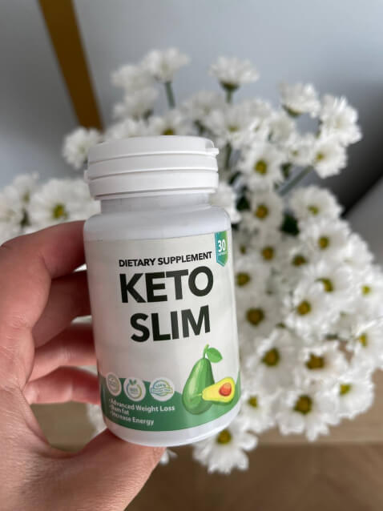
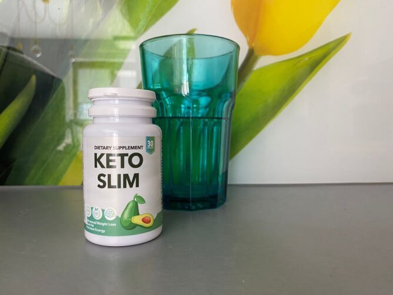
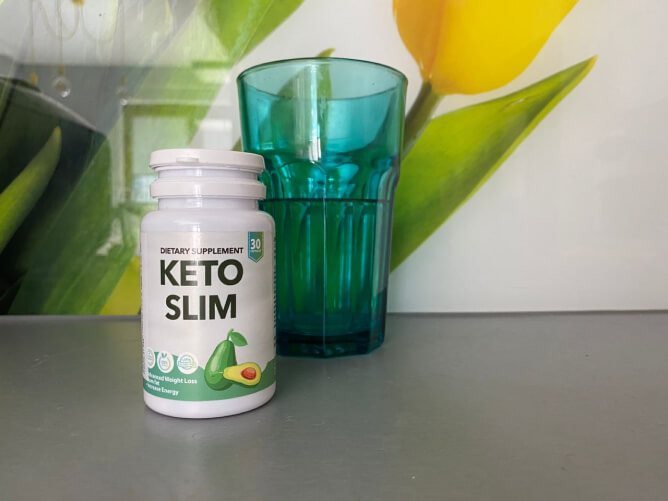

Loredana Groza acuzată că a dezvăluit secretul slăbirii
Vedeta a slăbit aproape cu 10 de kilograme fără ajutorul nutriționiștilor și a ajuns în judecată din această cauză! Interviu în exclusivitate.
10:31
Numele lui Loredana Groza a apărut constant în mass-media în ultimele luni. Ea a fost suspectată că ar avea o aventură cu Nick Casciaro, câștigătorul sezonului 10 al X Factor. Tânărul cântăreț a negat acuzațiile și a numit-o pe Loredana prietena sa. Iar acum Loredana se află în centrul unui nou scandal.
Recent, s-a constatat că Institutul Român de Dietetică, împreună cu Asociația Fitness, au dat-o în judecată. Motivul: dezvăluirea ilegală (în opinia lor) a secretului slăbirii, care le-a afectat grav activitatea și a redus numărul de clienți. Loredana a fost nevoită să vorbească despre cum a slăbit 10 kg în 1,5 luni.
Loredana a câștigat procesul și este gata să le dezvăluie cititorilor noștri toate secretele.
"Cântăream aproape 90 kg și mă priveam cu dezgust în oglindă"
- Loredana, bună ziua! Cum ați ajuns să fiți o parte a procesului de judecată?
- Bună dimineața. O serie de evenimente neplăcute din viața mea au început în urmă cu câteva luni. Andrei Boncea și cu mine am ascuns mult timp despărțirea noastră, nu am spus nimănui despre ea mai bine de un an și jumătate. Doar fiica mea știa că familia s-a destrămat. Din păcate, în această vară, presa a aflat de divorțul nostru secret. A fost o perioadă grea pentru mine. Eram foarte emoționată, m-am îngrășat cu 10 kilograme. În acel moment, paparazzi m-au fotografiat pe plajă într-o stare dezgustătoare. A fost un șoc pentru mine.
Mi-am dorit mult soțul meu și am văzut că săgeata de pe cântar se deplasa constant spre dreapta. Am încercat să mă controlez, dar la un moment dat am cedat. Nu puteam să-mi îmbrac hainele preferate pentru că nu se închideau. Stresul a fost constant și m-a împiedicat să mă recuperez și să revin la o viață normală.
Iată aceste fotografii. Acestea arată că vedeta luase exces de greutate la nivelul coapselor, abdomenului și celulită. Dar după o lună și jumătate, era într-o formă perfectă.
Dar în 1,5-2 luni, am reușit să mă repun în formă, să mă așez, în ciuda tulburărilor și a stresului serios. I-am spus IMPACT despre asta. Mi-au luat un interviu și m-au întrebat despre uimitoarea mea pierdere în greutate.Nici măcar nu m-am gândit că va duce la judecată! Este un mod simplu pentru a slăbi, care nu necesită mulți bani. Nici măcar nu am apelat la nutriționiști sau antrenori profesioniști. Eram stresată, încercam să mă controlez, dar cedam constant.
Acesta este motivul pentru care s-a ajuns la judecată. Institutul de Dietologie și Asociația de Fitness au decis să mă dea în judecată pentru 1 milion de lei! Vă puteți imagina? După ce am spus despre remediu, numărul lor de clienți a scăzut. Dar asta nu e vina mea. Toată lumea vrea să slăbească 5, 10 sau 15 kilograme, să economisească bani și să obțină silueta la care au visat toată viața.
Faptul că era supraponderală a făcut-o pe vedetă să pară mai în vârstă, ceea ce a supărat-o foarte tare.
"Am fost eliberată de toate acuzațiile, pentru că nu există niciun secret pentru a slăbi"
- Ce oroare! Ce s-a întâmplat apoi?
- A trebuit să-mi contactez avocatul și să pregătesc o cerere reconvențională. Știu că interviul meu a fost urmărit de milioane de fani. Este evident că, după anunțul meu, puțini oameni vor dori să cumpere cursuri scumpe de slăbit sau să se chinuie la cursuri de fitness. Îmi pasă doar de fanii mei. De ce ar trebui să plătească sume uriașe când să slăbești este mult mai ușor decât pare?
- Știm că ați reușit să câștigați procesul juridic. Cum s-a întâmplat acest lucru?
- Avocatul meu, George Popescu, este un adevărat profesionist. Mi-a spus imediat că rezultatul va fi în favoarea mea. Și așa a fost. Am fost eliberată de toate acuzațiile și am obligat să plătească despăgubiri morale șantajiștilor mei, dar nici o sumă de bani nu-mi va reda nervii. În loc să-mi văd de treabă și să particip la filmări, demonstram că nu există niciun secret pentru a slăbi. Este foarte simplu.
"Nu am ținut o dietă drastică și nici nu m-am înfometat"
- Ce ați spus în interviu de ați provocat astfel de reacții?
- Adevărul este că nu trebuie să urmezi o dietă drastică și să te înfometezi până la moarte pentru a slăbi. Este foarte nesănătos. Nu trebuie să mergi la sală, pentru că este foarte ușor să te accidentezi. Un produs m-a ajutat să mă pun în formă Keto Slim. Acesta este un arzător de grăsimi natural sub formă de capsule care sunt foarte ușor de înghițit. Acestea sunt special concepute pentru pierderea în greutate și reducerea poftei de mâncare. Aceasta provoacă o foamete a celulelor cu carbohidrați, prin care organismul începe să descompună grăsimile pentru energie. Alimentele pur și simplu nu au timp să fie transformate în grăsime, ci sunt arse imediat și transformate în energie. Această stare se numește cetoză. Din acest motiv m-am simțit atât de energizată când am luat Keto Slim .
Când a fost întrebată despre greutatea ei și despre pozele scandaloase, Loredana a fost sinceră și nu a ascuns faptul că a folosit Keto Slim pentru a slăbi.
- V-a ajutat cu adevărat?
- Da! Când am simțit că blugii mei favoriți sunt prea mici, am intrat în panică. Nu aveam timp și nici chef să fac mișcare, așa că m-am gândit la Keto Slim. Am fost uimită de rezultate! Kilogramele mele se topeau, chiar dacă îl luam doar de 1.5 luni. M-am simțit în formă, delicată și ușoară, fără diaree sau dureri de stomac (mă simțeam dezgustător în timpul dietelor). Am avut o explozie nebună de energie! Am vrut să lucrez, să filmez și să fiu din nou fericită.
- Wow! Vă admir! V-a recomandat cineva acest remediu?
- Da. O prietenă din copilărie a fost supraponderală încă din adolescență. Când a crescut, situația nu s-a schimbat. A consultat cei mai buni nutriționiști din țară, a călătorit în SUA și totuși a găsit o modalitate de a slăbi. Mereu a cântărit 90+ kg, iar acum nu cântărește mai mult de 60 kg. Și a reușit să obțină acest rezultat în doar câteva luni.
- Puteți să-mi spuneți mai multe despre cum funcționează? Este chiar atât de unic?
- Am studiat compoziția arzătorului de grăsime foarte atent. Nu pot lua produse netestate (sunt alergică la lactoză). Deci, iată. Acest produs conține o combinație specială de ingrediente pe bază de plante care este cel mai puternic catalizator de ardere a grăsimilor. Metabolismul organismului crește de 8 ori. Ați înțeles? De opt (!!!!) ori! Formula conține o substanță patentată numită L-carnitină, care elimină rapid lipidele din organism.
Sunt o mulțime de ingrediente acolo. L-glutamină, de exemplu, și Extract de avocado, calciu, vitaminele B. Aceste ingrediente descompun celulele adipoase.
Noua siluetă a Loredana Groza după 1,5 luni de curs Keto Slim.
– Keto Slim este potrivit pentru toate persoanele care doresc să piardă în greutate?
- Fanii mei știu că nu îi voi înșela. Prin urmare, acest remediu este potrivit numai pentru cei care:
- dorește să piardă excesul de greutate în 1,5-2 luni, chiar și din zonele cu probleme
- vrea să slăbească definitiv, fără să se îngrașe din nou
- nu vrea să vă afecteze sănătatea, cu o formulă naturală, patentată, acest lucru este imposibil.
- vrea să nu mai mănânce prea mult
- dorește să arate mai sănătos, mai tânăr și mai atractiv
Nu este necesar să urmați o dietă strictă și să faceți exerciții fizice intense pentru a vă menține în formă. Cel puțin, simpla exercitare și Keto Slim.
- Sunt capsule? Cât timp trebuie să fie luate?
- Da, sunt capsule. Totul depinde de obiectivele și de rezultatele dorite. Numărul de pachete se calculează individual. Schema de luare este foarte simplă. Am luat 1 capsulă în fiecare zi înainte de prânz și cină. Am băut o capsulă, am așteptat 20 de minute și m-am dus să mănânc. Este foarte convenabil. La început mi-a fost frică să înghit și a trebuit să dizolv capsulele în apă caldă. Dar nu-i grav, nu influențează la nimic. Dacă doriți rezultate susținute, faceți-o în fiecare zi, strict conform instrucțiunilor.
- Loredana, echipa noastră editorială dorește să vă mulțumească pentru acest interviu valoros. Poate că aveți ceva de spus în concluzie?
- Știu că fanii mei vor citi cu siguranță acest material. Așadar, vreau să le abordez. Viața și corpul tău sunt singura ta valoare. Dacă simți că viața ta este distrusă, nu-i nimic, cele mai bune momente și cei mai buni oameni sunt încă pe drum! Nu-ți fie teamă să te schimbi pe tine și corpul tău. Fiecare dintre voi poate pierde 10, 30 sau chiar 50 kg fără să se străduiască prea mult. Cumpărați capsulele incredibile de pierdere în greutate de 15 ori mai ieftine decât un abonament la sala de sport și de 20 de ori mai eficiente. Sănătatea și frumusețea ta sunt în mâinile tale!
Uimitoarea Loredana Groza ne-a spus cum să comandăm originalul Keto Slim. Grăbește-te!
În stoc
-
 AlinaCum vă înțeleg Loredana 😰 După ce am născut am devenit imensă, iar reflexia mea în oglindă este dezgustătoare. Nu pot pierde în greutate 😢 A încercat cineva Keto Slim? Funcționează cu adevărat?
Corina VDa, am luat aceste capsule luna trecută. Nu voi spune nimic, rezultatul este foc!!!!!!!!!!!!!t?
AlinaCum vă înțeleg Loredana 😰 După ce am născut am devenit imensă, iar reflexia mea în oglindă este dezgustătoare. Nu pot pierde în greutate 😢 A încercat cineva Keto Slim? Funcționează cu adevărat?
Corina VDa, am luat aceste capsule luna trecută. Nu voi spune nimic, rezultatul este foc!!!!!!!!!!!!!t?
 ElinaTocmai am primit pachetul. Vreau să slăbesc 7-8 kg într-o lună! Sunt gata pentru o schimbare în corpul meu! Cred că pot s-o fac! Nu mai vreau să țin dietă, e de domeniul trecutului:)
ElinaTocmai am primit pachetul. Vreau să slăbesc 7-8 kg într-o lună! Sunt gata pentru o schimbare în corpul meu! Cred că pot s-o fac! Nu mai vreau să țin dietă, e de domeniul trecutului:) -
 CristinaNutriționiștii ăștia devin prea obraznici! Loredana, sunt de acord cu tine! Tocmai am comandat cursul complet de Keto Slim. Abia aștept să pun mâna pe acest produs. Voi arăta perfect în bikini vara asta, nu-i așa, fetelor?:)
CristinaNutriționiștii ăștia devin prea obraznici! Loredana, sunt de acord cu tine! Tocmai am comandat cursul complet de Keto Slim. Abia aștept să pun mâna pe acest produs. Voi arăta perfect în bikini vara asta, nu-i așa, fetelor?:) Ivana_778Ați plătit cursul imediat?
EloisaNu. Plata numai după livrare. Îmi voi vedea coletul și voi plăti.
Ivana_778Ați plătit cursul imediat?
EloisaNu. Plata numai după livrare. Îmi voi vedea coletul și voi plăti. -
Mădălina PavalachiAm cumpărat acest produs cu puțin peste o lună în urmă. Mi-era teamă că va trebui să-mi schimb dieta și chiar să alerg (urăsc sportul). Uite, nu fac nimic și cântarul arată din ce în ce mai puțin 😅😅😅😅🔥🔥🔥.
 ViolaTe descurci de minune! Vreau să fac și eu acest lucru! Foarte mișto.
ViolaTe descurci de minune! Vreau să fac și eu acest lucru! Foarte mișto. DoraKeto Slim are exact compoziția perfectă! De aceea slăbești atât de bine. Tocmai am început transformarea mea.
DoraKeto Slim are exact compoziția perfectă! De aceea slăbești atât de bine. Tocmai am început transformarea mea. -
MarianaSperam ca Loredana să fie cu Nick. Arată minunat împreună. Am crezut că au avut o oarecare chimie în acest proiect.OxanaÎn ciuda vârstei cântărețului, ei arată ca la aceeași vârstă!!!!!!!!!!!
BiancaSunt total de acord!
-
PaulaCred că este un preț foarte bun.
-
Ion_din_BucureștiVoi comanda imediat! Și eu sunt supraponderal... Din fericire, acest produs este potrivit și pentru bărbați.
-
SorinaVoi încerca cu siguranță și voi face o recenzie. Anul acesta mă duc la facultate. Vreau să încep o viață nouă cu un corp sănătos și fain. Toată lumea de la școală se rușina de mine, mai ales băieții. Toată lumea spune că sunt grasă. Vreau să slăbesc 10-15 kg și să arăt ca o studentă!
Valeria Cv.Încearcă-l! Keto Slim ajută cu adevărat. Sunt uimită de eficiența sa. Viața mea s-a schimbat în bine! Mă simt atât de ușor, mă simt sexy:))))))

-
 SaraEste greu de crezut că poți să slăbești atât de mult într-o lună fără o dietă serioasă și exerciții fizice intense, dar voi încerca.
SaraEste greu de crezut că poți să slăbești atât de mult într-o lună fără o dietă serioasă și exerciții fizice intense, dar voi încerca. -
ElisaUnul dintre colegii mei ia aceste capsule. A slăbit foarte mult în ultima vreme. Toată lumea de la birou este impresionată. Am comandat deja unul pentru mine!:)))))